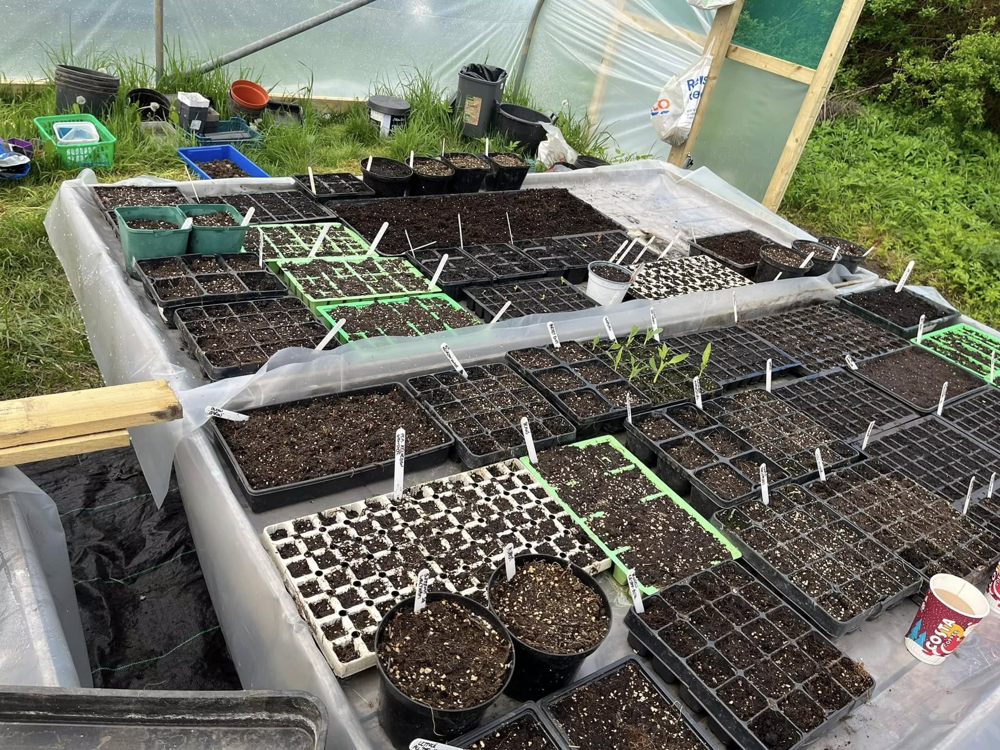
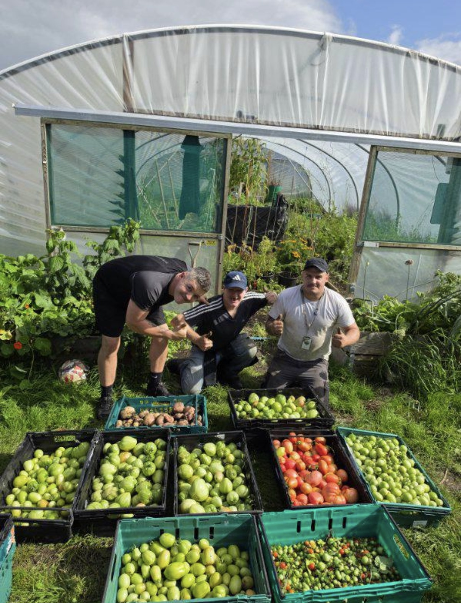
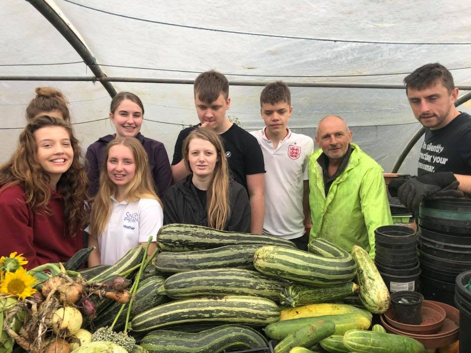
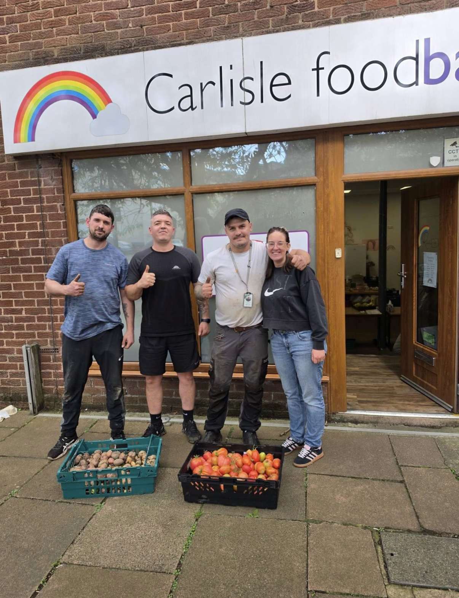
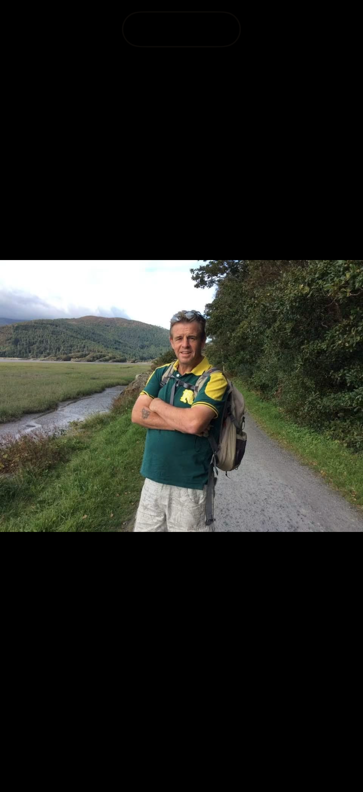

✿
Practical horticulture
Learn gardening, food growing, seasonal growing and plant care through hands-on activity.
A community garden for Carlisle
A welcoming green space where young people and the wider community can grow confidence, practical skills and a brighter future.

Our community garden brings practical activity and positive opportunity together.

Learn gardening, food growing, seasonal growing and plant care through hands-on activity.

Support for young people aged 16–24 who are not in education, employment or training.

Volunteering, intergenerational activities and a shared space that supports wellbeing.
The green hub approach
Carlisle Green Hub builds on around 30 years of local landscaping and gardening experience. Dennis has always believed that a garden can do more than grow plants — it can grow confidence, friendships and a sense of belonging.
From growing fresh produce for local food banks to building pathways towards education, training and employment, every activity has a purpose beyond the garden.
Meet the team

Owner & founder
Dennis loves his dog Elsa, a good cup of tea in the garden and being involved in local communities. He’s never been one for following instructions too closely — he’d rather go with the flow, listen to people and see what good things can grow. With decades of gardening experience and a big heart for Carlisle, Dennis is building a place where everyone can feel welcome, useful and part of something meaningful.
Come and grow with us
Whether you’re a young person, volunteer, community group or potential partner, we’d love to hear from you.
07778 025246 · Buchanan Place, Carlisle, CA2 4QF
From the Hub
A glimpse of the people, produce and wildlife that make Carlisle Green Hub what it is.